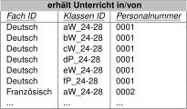

Abfrage von Daten#
Datenbanken werden mit einer spezifischen Datenbanksprache angesprochen. Im Gegensatz zur bisher im Unterricht verwendeten Programmiersprache Python ist die Datenbanksprache SQL (Structured Query Language) eine deklarative Sprache. In Python werden die Befehle grundsätzlich der Reihe nach abgearbeitet. In SQL wird das gewünschte Resultat beschrieben. Wie diese Beschreibung abgearbeitet wird, ist in den Grundlagen der Datenbank programmiert.
Grundstruktur einer SQL Abfrage#
Die Grundstruktur einer SQL Abfrage ist im untenstehenden Code Snippet dargestellt.
SELECT <Spalten>
FROM <Tabelle>
WHERE <Bedingung>;
Das Schlüsselwort SELECT gibt an, welche Spalte(n) aus der Tabelle ausgegeben
werden soll(en). Das Schlüsselwort FROM gibt an, aus welcher Tabelle die
Daten ausgelesen werden. Das Schlüsselwort WHERE gibt die Bedingung an, die
erfüllt sein muss, damit die Daten angezeigt werden. Dass die Schlüsselwörter
in Grossbuchstaben geschrieben werden, ist technisch nicht nötig, entspricht
aber der Konvention. Die Abfrage wird mit einem Semikolon abgeschlossen.
Einfache Abfrage#
In einem ersten Beispiel sollen alle Vornamen aller Lehrer aus der Tabelle Lehrer aus dem vergangenen Abschnitt angezeigt werden:
SELECT Vorname
FROM Lehrer;
In diesem Beispiel wurde auf die Formulierung einer Bedingung verzichtet. Wenn
die Ausgabe zusätzlich eine Bedingung erfüllen soll, wird diese mit dem
Schlüsselwort WHERE angegeben. Im folgenden Beispiel sollen nur die Vornamen der
Lehrer angezeigt werden, die vor dem Jahr 1800 geboren sind.
Abfrage mit Bedingung#
SELECT Vorname
FROM Lehrer
WHERE Geburtsdatum < '1800-01-01';
Diese Abfrage führt zu folgendem Ergebnis:
Vorname |
|---|
Friedrich |
Honore de |
Johann Carl Friedrich |
Guillaume-Henri |
Sortierung der Ausgabe#
Falls die Ausgabe nicht nur die Vornamen, sondern auch die Nachnamen und das Geburtsdatum enthalten soll und die Ausgabe nach dem Geburtsdatum aufsteigend sortiert werden soll, wird die Abfrage entsprechend angepasst:
SELECT Name, Vorname, Geburtsdatum
FROM Lehrer
WHERE Geburtsdatum < '1800-01-01'
ORDER BY Geburtsdatum;
Diese Abfrage führt zu folgendem Ergebnis:
Name |
Vorname |
Geburtsdatum |
|---|---|---|
Schiller |
Friedrich |
10.11.1759 |
Gauss |
Johann Carl Friedrich |
30.04.1777 |
Dufour |
Guillaume-Henri |
15.09.1787 |
Balzac |
Honoré de |
20.05.1799 |
Es können dem Schlüsselwort SELECT mehrere Spalten übergeben werden.
Zusätzlich wurde in der Anfrage das Schlüsselwort ORDER BY verwendet. Mit
diesem kann angegeben werden, nach welchem Kriterium die Ausgabe sortiert werden
soll. Standardmässig wird aufsteigend sortiert. Mit dem Schlüsselwort DESC kann
die Sortierung absteigend erfolgen. Die Abfrage sieht dann folgendermassen aus:
SELECT Name, Vorname, Geburtsdatum
FROM Lehrer
WHERE Geburtsdatum < '1800-01-01'
ORDER BY Geburtsdatum DESC;
Die Sortierreihenfolge wird hinter das Kriterium geschrieben. Wenn nach mehreren Kriterien sortiert werden soll, werden die zusätzlichen Kriterien mit einem Komma an das erste Kriterium angehängt.
Abfrage aus mehreren Tabellen#
Interessanter, als die Abfrage von Daten aus einer einzigen Tabelle, ist die
Abfrage aus mehreren Tabellen. So ist es im Beispiel möglich, Abzufragen, wer
Deutsch unterrichtet. Aus diesem Grund wurde die Tabelle erhält Unterricht in/von angelegt.

Um abzufragen, wer Deutsch unterrichtet, müssen die Daten aus den Tabellen
Lehrer, Fach und erhält Unterricht in/von zusammengeführt werden. Dies
geschieht mit dem Schlüsselwort JOIN. Das Schlüsselwort JOIN kann
unterschiedlich verwendet werden. Im vorliegenden Beispiel wird die Variante INNER JOIN verwendet.
SELECT DISTINCT l.Name, l.Vorname
FROM Lehrer AS l
INNER JOIN erhält_Unterricht_in AS u ON l.Personalnummer = u.Personalnummer
WHERE u.Fach_ID = 'Deutsch';
Das Resultat dieser Abfrage sieht wie folgt aus:
Name |
Vorname |
|---|---|
Schiller |
Friedrich |
In Ergänzung zu den bisherigen Abfragen, kommt neu das Schlüsselwort DISTINCT
zum Einsatz. Dieses bewirkt, dass Daten, die mehrfach vorkommen, nur einmal
ausgegeben werden. In diesem Beispiel wäre dies nicht nötig, da es nur einen
Lehrer gibt, der Deutsch unterrichtet.
Unter dem Schlüsselwort FROM wird die Tabelle Lehrer mit dem Alias l
angegeben. Der Alias wird verwendet, um die Abfrage leserlicher zu machen. Wenn
mehrere Tabellen abgefragt werden, muss jede Spalte, die ausgeben werden soll,
mit der Tabelle, aus der sie stammt, angegeben werden. Mit dem Alias kann dies
abgekürzt werden. Das Schlüsselwort AS für den Alias ist nicht nötig, dient
aber der besseren Lesbarkeit.
Mit dem Schlüsselwort INNER JOIN werden die Datensätze aus den beiden Tabellen
Lehrer und erhält_Unterricht_in basierend auf übereinstimmenden Werten in
der Spalte Personalnummer miteinander verbunden. Dabei entsteht eine neue
Ergebnismenge, die alle Spalten beider Tabellen enthält, jedoch nur für
diejenigen Zeilen, bei denen die Personalnummer in beiden Tabellen
übereinstimmt.
Aus dieser Schnittmenge werden aus der Tabelle erhält Unterricht in/von die
Lehrer ausgewählt, die Deutsch unterrichten. Dies geschieht mit dem
Schlüsselwort WHERE und dem Kriterium u.Fach_ID = 'Deutsch'.
Die Abfrage, wer die Klasse fP_24-28 in PPP unterrichtet, sieht wie folgt aus:
SELECT l.Name, l.Vorname
FROM Lehrer AS l
INNER JOIN erhält_Unterricht_in AS u ON l.Personalnummer = u.Personalnummer
WHERE u.Fach_ID = 'PPP'
AND u.Klassen_ID = 'fP_24-28';
Die Abfrage gibt folgendes Resultat zurück:
Name |
Vorname |
|---|---|
Piaget |
Jean |
Gegenüber der Abfrage, wer Deutsch unterrichtet, wurde mit dem Schlüsselwort
AND die zusätzliche Bedingung u.Klassen_ID = 'fP_24-28' hinzugefügt.
Ausblick#
Der nächste Abschnitt dient dazu, SQL zu üben. Als Übungsplattform wird SQL Island genutzt. Diese Plattform ist unter sql-island.informatik.uni-kl.de zu finden.